The Last of Us es una historia de supervivencia en un mundo devastado por una infección que transformó a la humanidad. La saga se centra en los vínculos entre personajes, las decisiones difíciles y la lucha constante por sobrevivir.
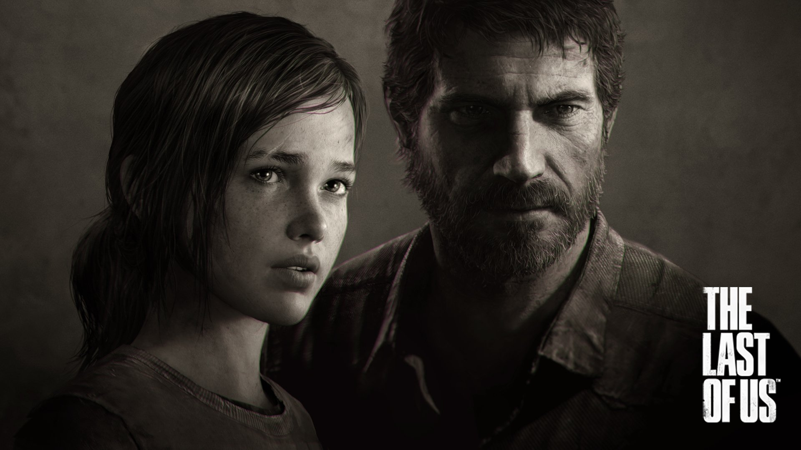
La historia de The Last of Us comienza con la caída de la civilización debido a una infección causada por el hongo Cordyceps, que muta y comienza a afectar a los humanos. Este hongo toma control del cuerpo y la mente de las personas, transformándolas en criaturas violentas conocidas como infectados.
En cuestión de días, el mundo entra en colapso. Las ciudades quedan destruidas, los gobiernos pierden el control y la humanidad queda al borde de la extinción. En medio de este caos comienza la historia de Joel Miller.
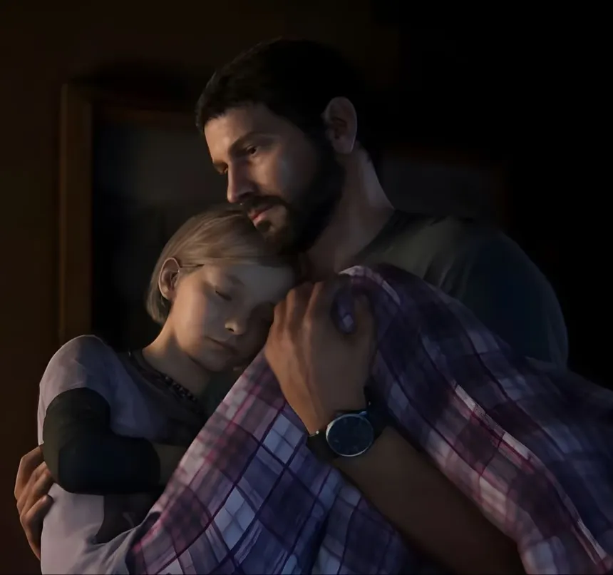
Joel vive en Texas junto a su hija Sarah. La historia comienza en una noche aparentemente normal, pero rápidamente se transforma en una pesadilla. Sirenas, explosiones y disturbios indican que algo terrible está ocurriendo.
Cuando el vecino de Joel aparece infectado e intenta atacar, queda claro que la situación está fuera de control. Joel rescata a Sarah y junto a su hermano Tommy intentan escapar de la ciudad.
Las calles están llenas de caos, incendios y accidentes. La infección se propaga a una velocidad imposible de contener. Finalmente, el auto en el que escapan se estrella, obligándolos a continuar a pie.
En medio de la huida, un soldado les apunta. A pesar de que Joel intenta explicarle que no están infectados, el soldado recibe la orden de eliminarlos. Dispara, y Sarah es mortalmente herida.
Joel sostiene a su hija mientras muere en sus brazos. Este momento marca el quiebre total del personaje, convirtiéndolo en alguien endurecido, marcado por la pérdida y el dolor.
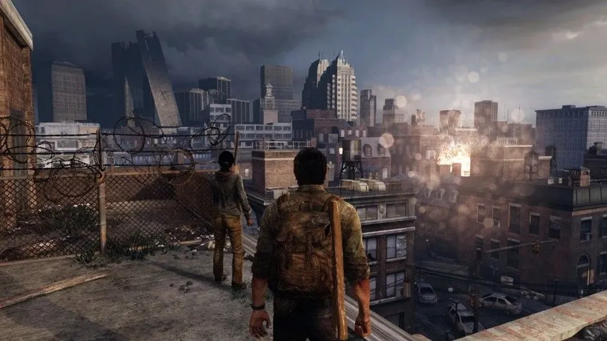
Veinte años después, la civilización ha desaparecido. Los sobrevivientes viven en zonas de cuarentena controladas por militares o en asentamientos improvisados. Fuera de estas zonas, el mundo es extremadamente peligroso.
Joel se ha convertido en un contrabandista sin escrúpulos, trabajando junto a Tess. Ambos hacen lo necesario para sobrevivir, dejando atrás cualquier tipo de moral.
La humanidad vive bajo reglas estrictas, ejecuciones públicas y escasez de recursos. En este mundo, la esperanza prácticamente no existe.
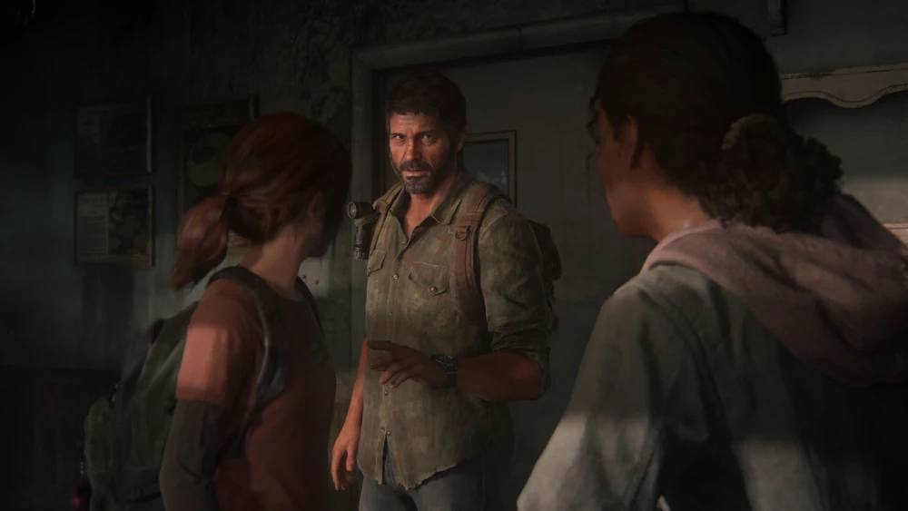
Joel y Tess aceptan un encargo de las Luciérnagas: escoltar a una adolescente llamada Ellie fuera de la zona de cuarentena. Lo que parece un trabajo simple pronto se vuelve mucho más importante.
Ellie es inmune al Cordyceps. A pesar de haber sido mordida, no se convierte en infectada. Esto la convierte en la única esperanza conocida para desarrollar una cura.
Joel no está interesado en la misión por razones morales, pero acepta por necesidad. Sin embargo, este viaje cambiará completamente su vida.
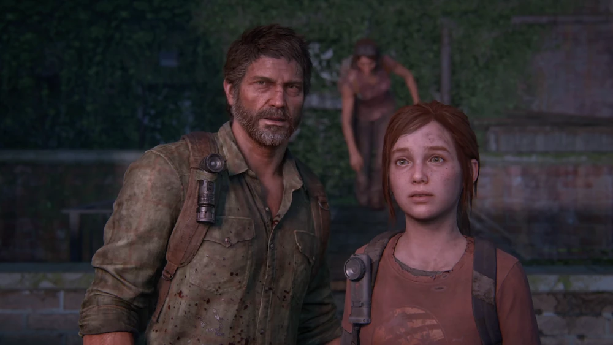
El viaje de Joel y Ellie los lleva a través de ciudades destruidas, bosques abandonados y territorios dominados por infectados y humanos hostiles. En este mundo, las personas pueden ser incluso más peligrosas que las criaturas.
Durante el camino enfrentan cazadores, bandas de supervivientes violentos que matan por recursos, y también conocen aliados como Bill, un hombre solitario experto en sobrevivir.
La relación entre Joel y Ellie comienza siendo distante, pero poco a poco se transforma en un vínculo casi paternal. Joel empieza a ver en Ellie algo que creía perdido: una razón para seguir adelante.
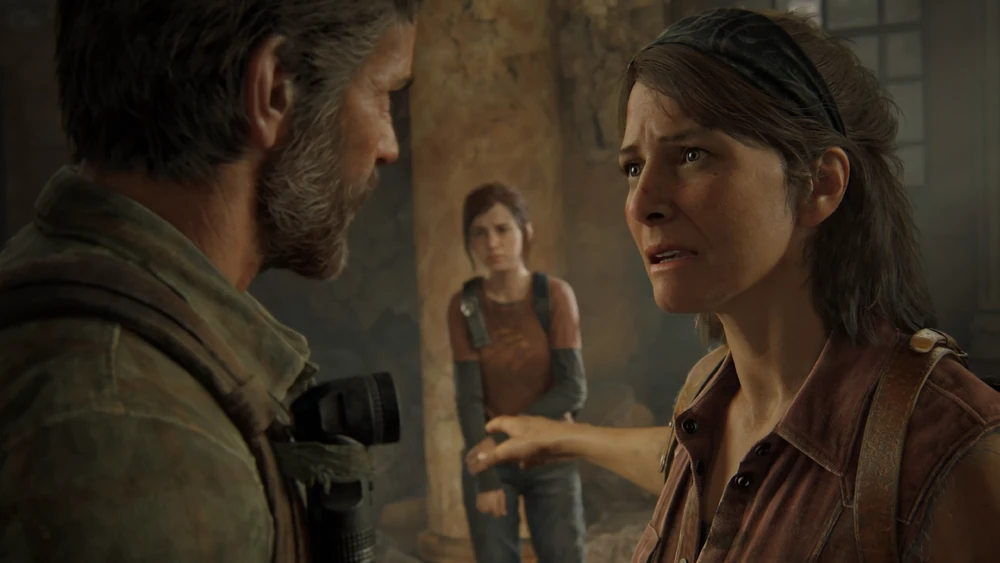
Durante el viaje, Tess es mordida y decide sacrificarse para que Joel y Ellie puedan escapar. Este momento refuerza la importancia de la misión y obliga a Joel a continuar.
A lo largo de la historia, ambos enfrentan múltiples tragedias, incluyendo la muerte de aliados y encuentros con personas que han perdido toda humanidad.
Ellie también demuestra ser fuerte y capaz, adaptándose a un mundo cruel mientras mantiene una parte de su inocencia.
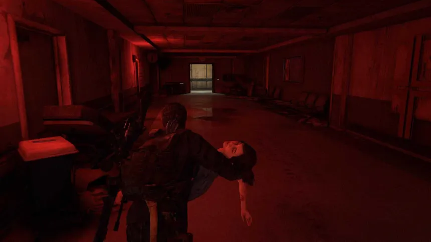
Finalmente, Joel logra llevar a Ellie hasta las Luciérnagas. Allí descubre la verdad: para crear una cura, deben operar a Ellie, lo que inevitablemente la matará.
Joel, incapaz de perder nuevamente a alguien que ama, toma una decisión extrema. Mata a los miembros de las Luciérnagas y rescata a Ellie, destruyendo la posibilidad de una cura.
Antes de irse, Joel le miente a Ellie, diciéndole que no pudieron hacer nada. Ellie, aunque duda, decide confiar en él.
La historia termina con una pregunta moral profunda: ¿fue correcta la decisión de Joel?
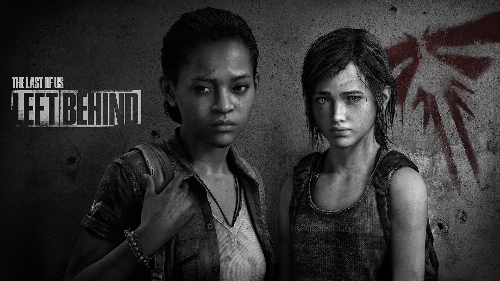
Left Behind es una historia paralela que profundiza en el pasado de Ellie, mostrando tanto eventos anteriores al primer juego como momentos que ocurren durante la aventura principal. Este capítulo revela aspectos fundamentales de su personalidad, su dolor y las experiencias que la formaron.
La narrativa se divide en dos líneas temporales: el pasado de Ellie junto a su mejor amiga Riley, y el presente, donde intenta sobrevivir junto a Joel tras los eventos ocurridos en el juego principal.
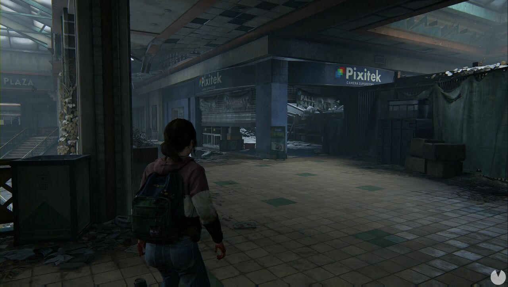
La historia comienza después de que Joel resulta gravemente herido. Ellie, sola y sin experiencia médica, debe encontrar la forma de salvarlo mientras enfrenta un entorno hostil lleno de peligros.
Desesperada, explora un centro comercial abandonado en busca de suministros. La tensión es constante: cada paso puede significar la muerte, ya sea por infectados o por otros sobrevivientes.
Este momento muestra una versión más vulnerable de Ellie, pero también su determinación. A pesar del miedo, decide no rendirse, demostrando que está dispuesta a hacer lo necesario para salvar a Joel.
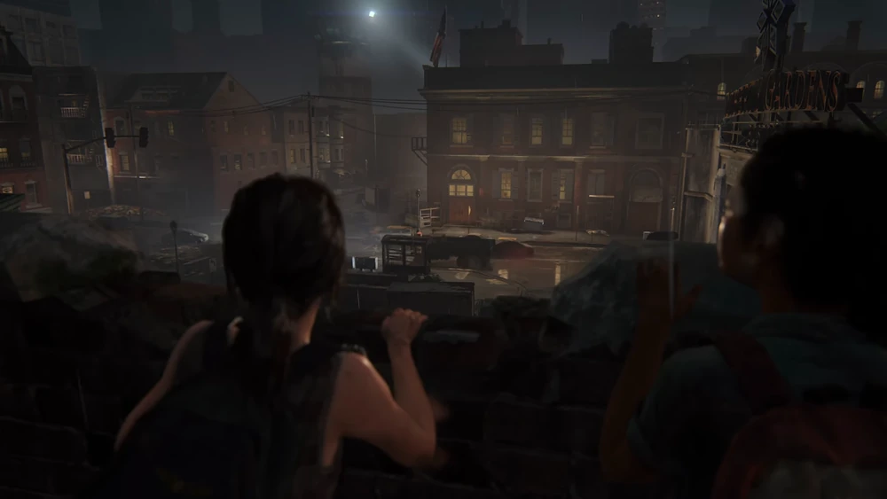
Meses antes de los eventos principales, Ellie vive en una escuela militar dentro de una zona de cuarentena. Su vida está marcada por la disciplina estricta y la falta de libertad.
Una noche, Riley, su mejor amiga, regresa inesperadamente después de haber desaparecido. Riley ha decidido unirse a las Luciérnagas, un grupo rebelde que lucha contra la autoridad militar.
Ellie se siente traicionada por su desaparición, pero también emocionada de volver a verla. Riley le propone escapar por una noche para vivir algo diferente antes de separarse definitivamente.
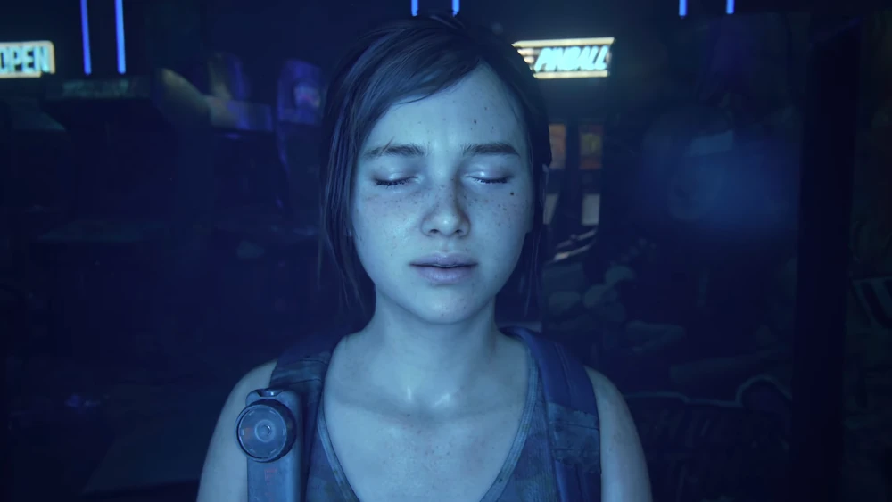
Riley lleva a Ellie a un centro comercial abandonado, un lugar que alguna vez estuvo lleno de vida. Para Ellie, que creció en un mundo destruido, este lugar es casi mágico.
Durante la noche, ambas recorren diferentes lugares: una tienda de disfraces, una sala de videojuegos, una cabina de fotos y hasta un carrusel. Son momentos simples, pero cargados de significado.
Por un instante, logran olvidar el mundo exterior. Ríen, juegan y actúan como adolescentes normales, algo extremadamente raro en ese universo.
Sin embargo, debajo de esa felicidad momentánea, hay una tensión emocional constante: Riley planea irse definitivamente con las Luciérnagas.
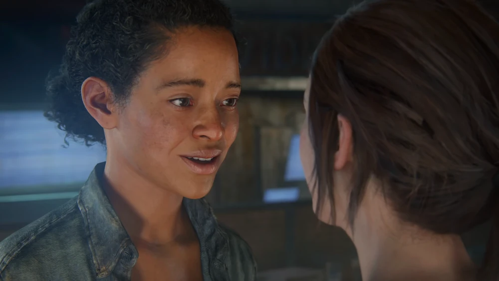
A medida que la noche avanza, la relación entre Ellie y Riley se vuelve más profunda. Lo que comenzó como una amistad revela sentimientos más intensos.
Ellie no quiere perder a Riley, mientras que Riley está decidida a seguir su camino. La tensión emocional culmina en un momento íntimo donde ambas se besan, dejando en claro la conexión especial que comparten.
Es un instante de felicidad pura, pero también el comienzo de la tragedia.
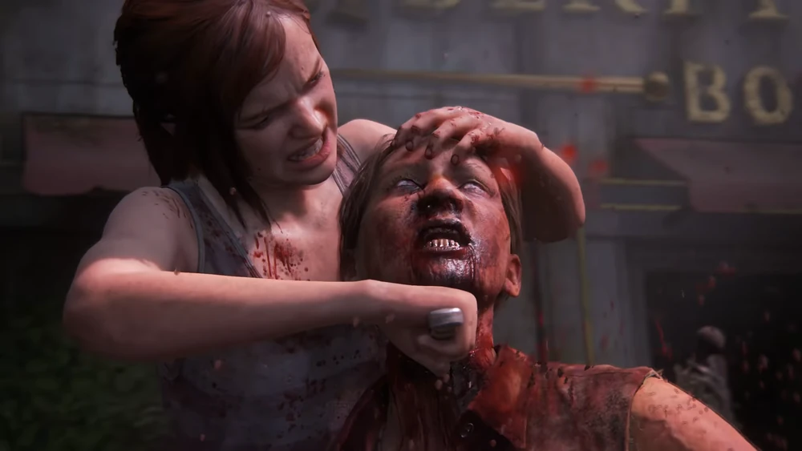
Después de ese momento, todo cambia rápidamente. Un grupo de infectados aparece y ataca el lugar. Ellie y Riley intentan defenderse, pero la situación se descontrola.
Ambas logran sobrevivir al ataque, pero descubren la peor realidad posible: las dos han sido mordidas.
Saben lo que eso significa. La infección es inevitable... al menos para cualquiera que no sea Ellie.
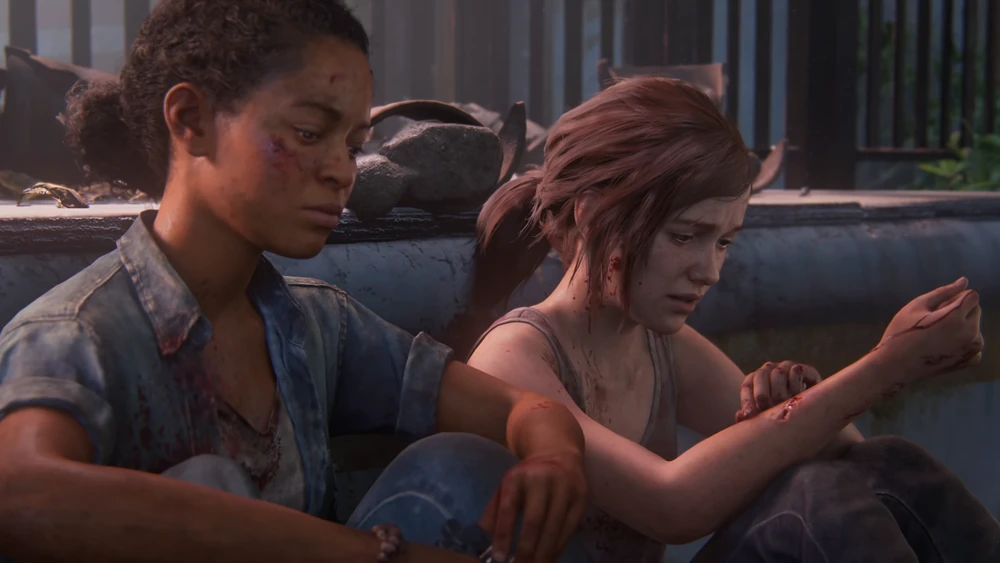
Frente a su destino, Riley propone dos opciones: rendirse o aprovechar el tiempo que les queda. Ambas deciden quedarse juntas, esperando el final.
Este momento es uno de los más emotivos de toda la saga. No hay acción, no hay escape, solo aceptación y compañía en los últimos momentos.
Riley eventualmente se convierte, mientras que Ellie, milagrosamente, no. Este evento marca profundamente a Ellie, cargándola con una mezcla de culpa, dolor y confusión.
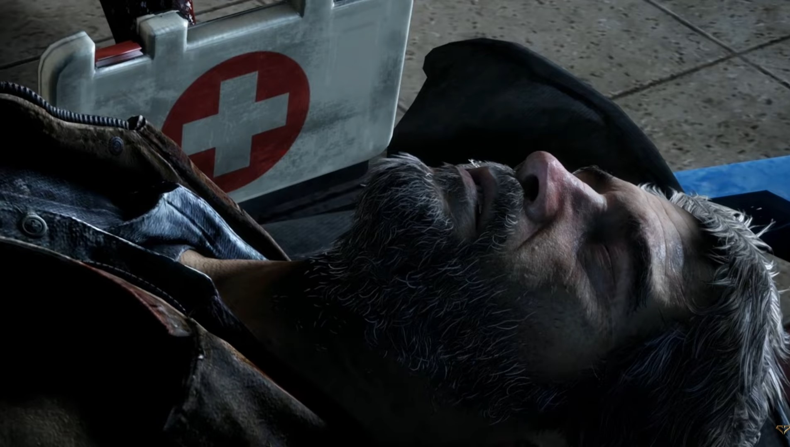
La historia vuelve al presente, donde Ellie logra encontrar los suministros necesarios para ayudar a Joel. A pesar de todo lo que ha vivido, sigue adelante.
El recuerdo de Riley y la experiencia de haber sobrevivido refuerzan su determinación. Ellie no solo lucha por Joel, sino también por darle sentido a su inmunidad.
Left Behind no solo expande la historia, sino que profundiza el personaje de Ellie, mostrando su vulnerabilidad, su fuerza y el origen de muchas de sus decisiones.
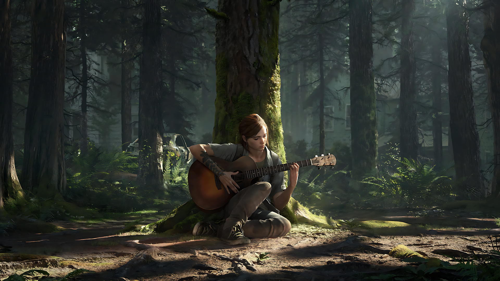
Años después de los eventos del primer juego, Ellie vive en Jackson junto a Joel y otros sobrevivientes. Aunque el mundo sigue siendo brutal, han logrado construir una comunidad relativamente segura.
Sin embargo, la relación entre Joel y Ellie es tensa. Ellie sospecha que Joel le ocultó la verdad sobre lo ocurrido con las Luciérnagas. Esta duda crea una distancia emocional entre ambos.
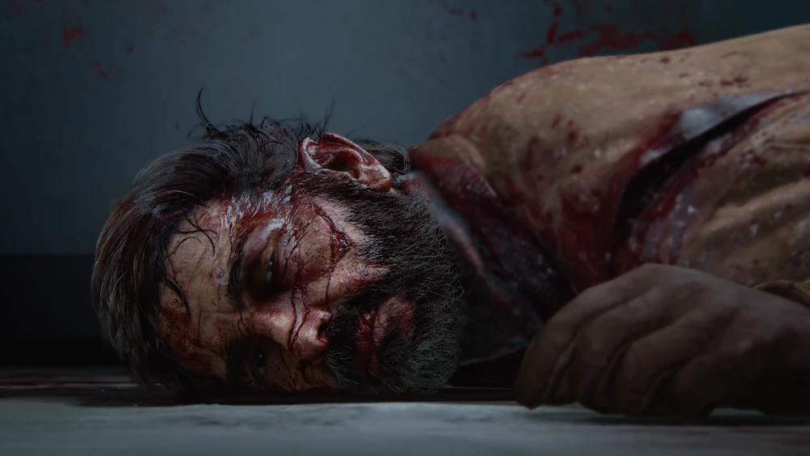
Todo cambia cuando un grupo liderado por Abby llega a la zona. Joel y Tommy ayudan a Abby sin saber quién es realmente.
Abby resulta ser la hija del médico que Joel mató al final del primer juego. Buscando venganza, captura a Joel y lo asesina brutalmente frente a Ellie.
Este evento es el punto de partida de toda la historia. Ellie queda destruida emocionalmente y decide iniciar un viaje de venganza.
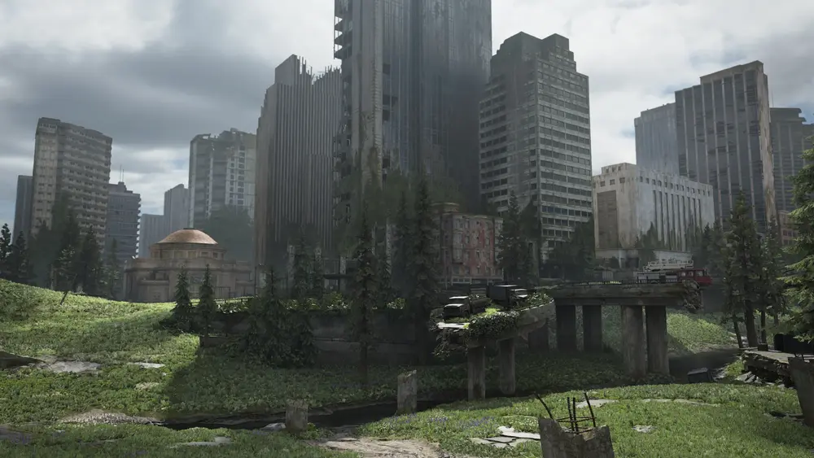
Ellie viaja a Seattle junto a Dina para encontrar a los responsables. La ciudad está controlada por dos facciones en guerra: el WLF (Frente de Liberación de Washington) y los Serafitas, un grupo religioso extremo.
Durante su búsqueda, Ellie se vuelve cada vez más violenta, eliminando a cualquiera que se interponga en su camino.
La venganza comienza a consumirla, alejándola de la persona que alguna vez fue.
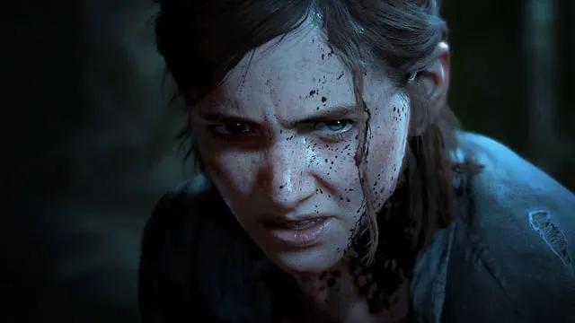
A medida que avanza, Ellie pierde cada vez más su humanidad. Sus acciones tienen consecuencias, afectando a quienes la rodean, incluyendo a Dina.
Uno de los momentos más impactantes ocurre cuando Ellie mata a Nora y luego a Mel, descubriendo demasiado tarde que estaba embarazada.
Estos eventos comienzan a quebrarla psicológicamente, pero aun así continúa adelante.
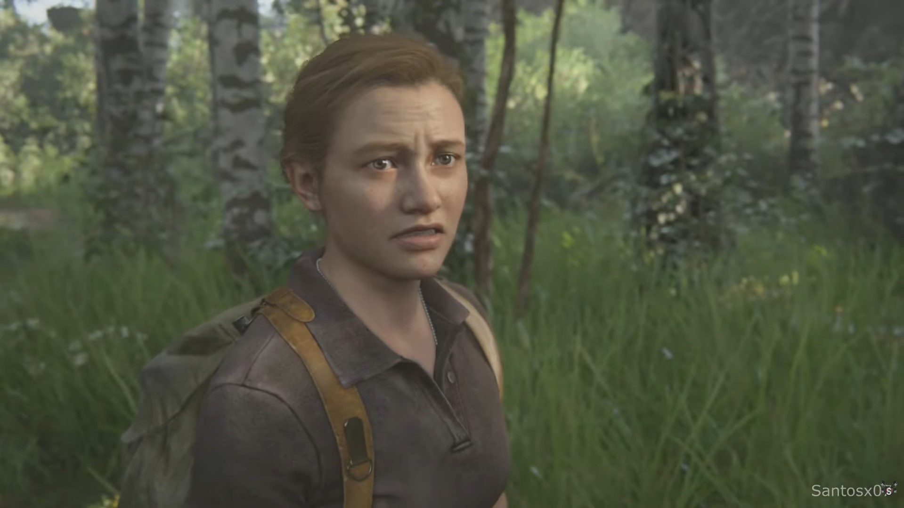
En un giro narrativo, la historia cambia de perspectiva y pasa a Abby. Se muestra su pasado, su relación con su padre y cómo la muerte de este a manos de Joel la marcó profundamente.
Abby no es solo una antagonista, sino una persona con sus propias motivaciones, pérdidas y relaciones.
A lo largo de su historia, forma un vínculo con Lev y Yara, dos hermanos que escapan de los Serafitas. Este vínculo humaniza a Abby y muestra otra cara del conflicto.
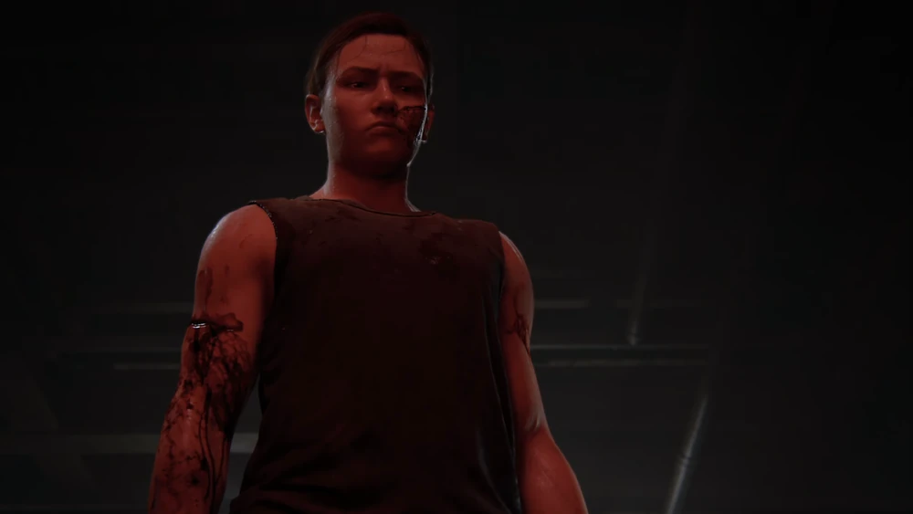
Ambas historias convergen cuando Abby encuentra a Ellie. Se enfrentan en un combate brutal donde Abby logra dominar la situación.
Sin embargo, decide perdonarles la vida, rompiendo el ciclo de venganza... al menos temporalmente.
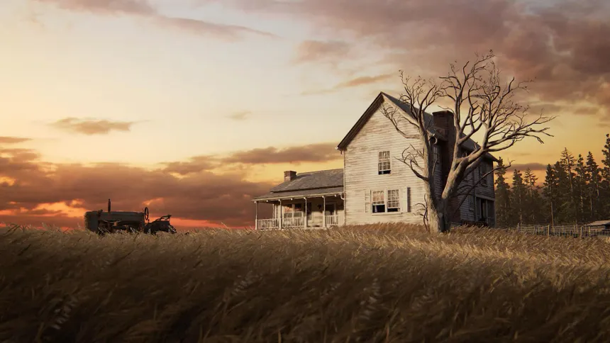
Tiempo después, Ellie intenta vivir una vida tranquila con Dina, pero el trauma no la deja avanzar. Decide abandonar todo para buscar nuevamente a Abby.
Encuentra a Abby debilitada y al borde de la muerte. A pesar de tener la oportunidad de matarla, Ellie recuerda a Joel y decide dejarla ir.
Este acto representa el final del ciclo de venganza. Ellie pierde muchas cosas en el proceso, pero logra recuperar parte de su humanidad.
A continuación se presentan los personajes más importantes de The Last of Us, Left Behind y The Last of Us Part II, con su historia, trasfondo y rol dentro de la saga.
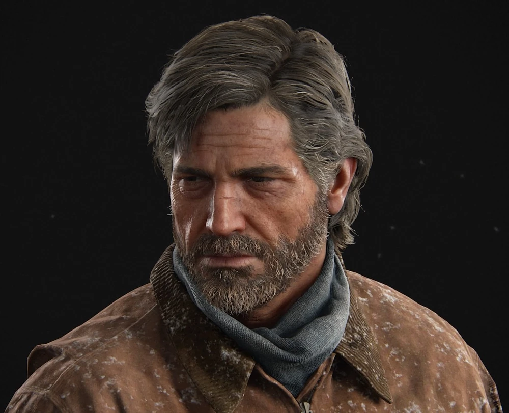
Joel Miller es el protagonista principal de The Last of Us. Antes del brote, llevaba una vida relativamente normal en Texas junto a su hija Sarah. Todo cambia la noche en que la infección por Cordyceps comienza a propagarse y el mundo entra en colapso. La muerte de Sarah marca a Joel para siempre y lo convierte en un hombre endurecido, desconfiado y emocionalmente cerrado.
Durante los años posteriores al brote, Joel sobrevive como puede, haciendo trabajos de contrabando y evitando cualquier vínculo emocional fuerte. Cuando conoce a Ellie, su vida cambia otra vez. Al principio la ve como una carga, pero poco a poco desarrolla con ella una relación profunda, casi paternal. Ese vínculo termina definiendo toda su historia.
En el final del primer juego, Joel toma una decisión extrema para salvar a Ellie, destruyendo la posibilidad de una cura. Esa elección lo convierte en uno de los personajes más complejos de la saga, porque actúa por amor, pero también condena al mundo. En The Last of Us Part II, su pasado regresa con consecuencias brutales, y su muerte marca el inicio de la venganza de Ellie.
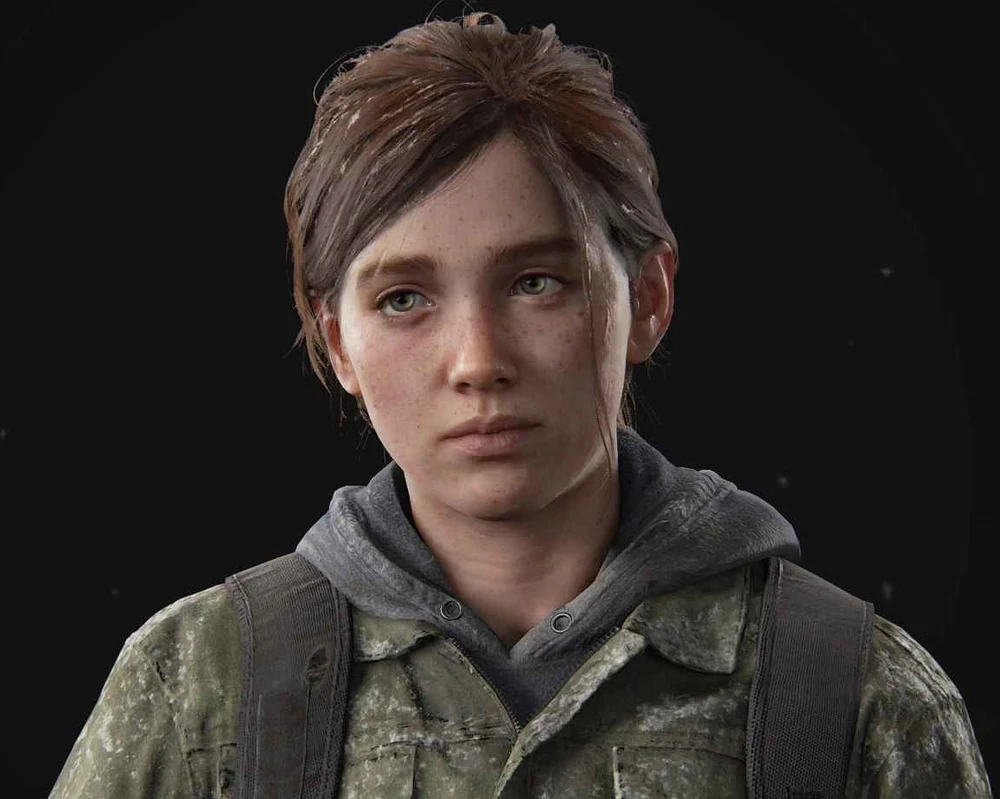
Ellie Williams es la coprotagonista de la saga y una de las figuras más importantes de todo el universo. Nació después del brote y creció en un mundo roto, por lo que nunca conoció la vida normal previa a la infección. Desde joven mostró una personalidad fuerte, sarcástica, valiente y muy inteligente.
Su gran particularidad es que es inmune al Cordyceps. Esa inmunidad la convierte en una posible esperanza para la humanidad y en el centro de la misión de Joel. Durante el primer juego, Ellie pasa de ser una adolescente confiada a convertirse en alguien que aprende a sobrevivir en un mundo brutal. Su relación con Joel se transforma en una de las más importantes de los videojuegos.
En Left Behind, se explora su pasado con Riley y se muestra una parte mucho más íntima de su vida, incluyendo sus emociones, sus pérdidas y la forma en que aprendió a vivir con su inmunidad. En The Last of Us Part II, Ellie se vuelve el centro de una historia más oscura, marcada por la venganza, el trauma y la pérdida de su humanidad. Su viaje termina siendo uno de los más trágicos y emocionales de la saga.
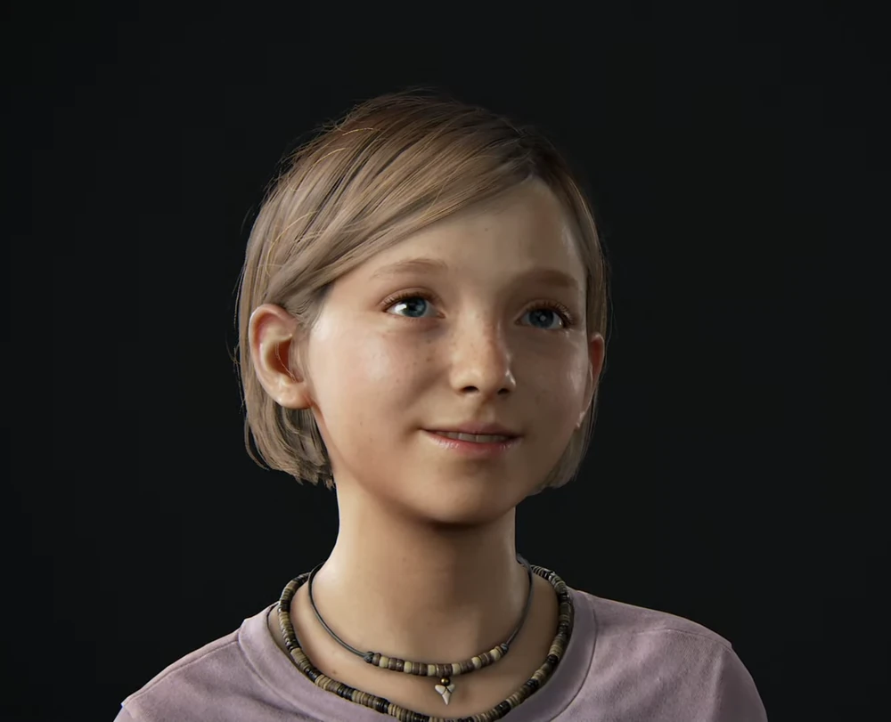
Sarah Miller es la hija de Joel y uno de los personajes más importantes emocionalmente en el inicio de la saga. Antes del brote, llevaba una vida tranquila junto a su padre, y su relación con él estaba llena de pequeños detalles cotidianos que hacen todavía más fuerte su pérdida.
Durante la noche del brote, Sarah intenta sobrevivir junto a Joel y Tommy, pero termina siendo herida de muerte por un soldado que recibe órdenes de disparar. Su muerte en brazos de Joel es el momento que define todo el carácter del protagonista y explica por qué él se vuelve tan cerrado y protector con el tiempo.
Aunque aparece poco, Sarah es una presencia constante en toda la historia. Su recuerdo acompaña a Joel durante años y su ausencia influye directamente en todo lo que él hace después.
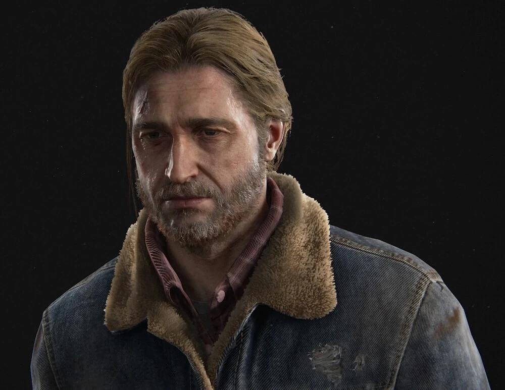
Tommy Miller es el hermano de Joel y un personaje clave en la historia de la saga. Durante el brote, intenta sobrevivir junto a Joel y Sarah, pero con el tiempo toma un camino distinto al de su hermano. Se une a las Luciérnagas, aunque más adelante decide buscar una vida más estable.
Tommy representa una versión diferente de la supervivencia. Mientras Joel se vuelve más cerrado y violento, Tommy busca comunidad, hogar y cierto sentido de reconstrucción. Vive con Maria en Jackson y trata de mantener un equilibrio entre la dureza del mundo y la posibilidad de construir algo mejor.
En The Last of Us Part II, Tommy sufre profundamente por la muerte de Joel y se convierte en una pieza importante del conflicto de venganza. Su evolución muestra cómo el trauma puede destruir incluso a quienes intentan vivir de forma más tranquila.
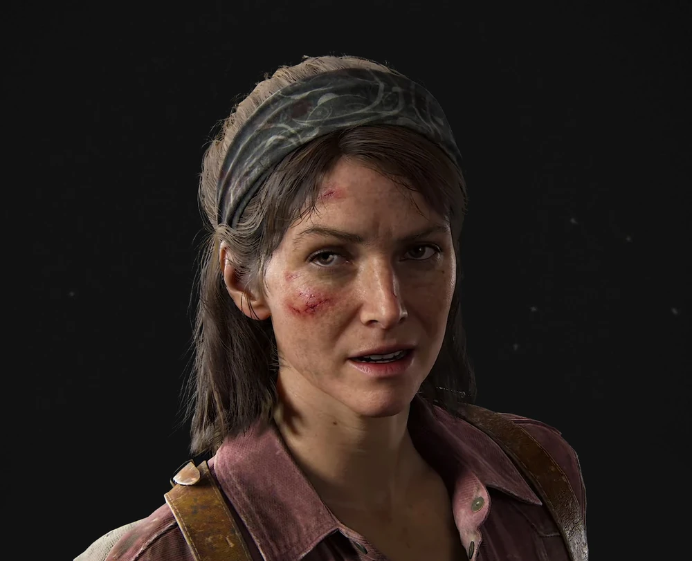
Tess es la compañera de contrabando de Joel al comienzo del primer juego. Es una mujer fuerte, directa y totalmente acostumbrada al mundo violento que los rodea. Junto a Joel, sobrevive en Boston haciendo trabajos ilegales y moviéndose entre militares, rebeldes y traficantes.
Su historia cambia cuando acepta ayudar a transportar a Ellie. Al comienzo duda de la importancia de la misión, pero al descubrir la inmunidad de Ellie entiende que está ante algo mucho más grande. Tess termina sacrificándose para que Joel y Ellie continúen, y su muerte marca el inicio real del viaje.
Su personaje es importante porque encarna la dureza del mundo postapocalíptico, pero también la capacidad de tomar decisiones morales en medio del desastre.
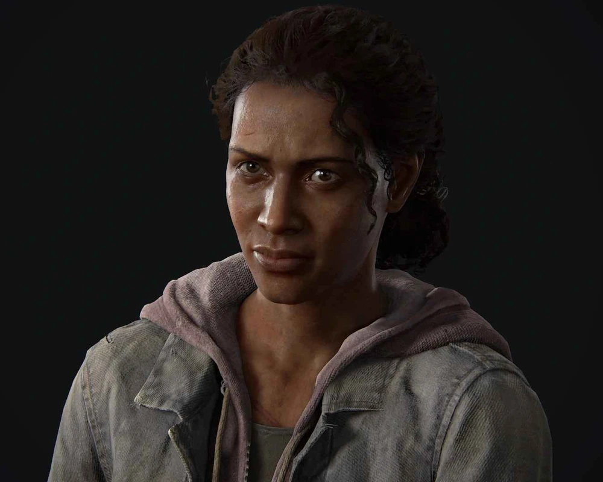
Marlene es la líder de las Luciérnagas y una figura central en la primera entrega. Conoce a Ellie desde niña y entiende el valor que tiene su inmunidad. Su objetivo es usar esa posibilidad para intentar encontrar una cura y devolverle esperanza al mundo.
A lo largo de la historia, Marlene funciona como la cara más humana de las Luciérnagas, pero también como alguien capaz de tomar decisiones frías en nombre de un bien mayor. Su conflicto con Joel al final del juego es fundamental, porque ambos creen estar haciendo lo correcto desde perspectivas totalmente opuestas.
Su historia la convierte en una figura trágica: quiere salvar al mundo, pero termina enfrentándose a un hombre que solo quiere salvar a una persona.
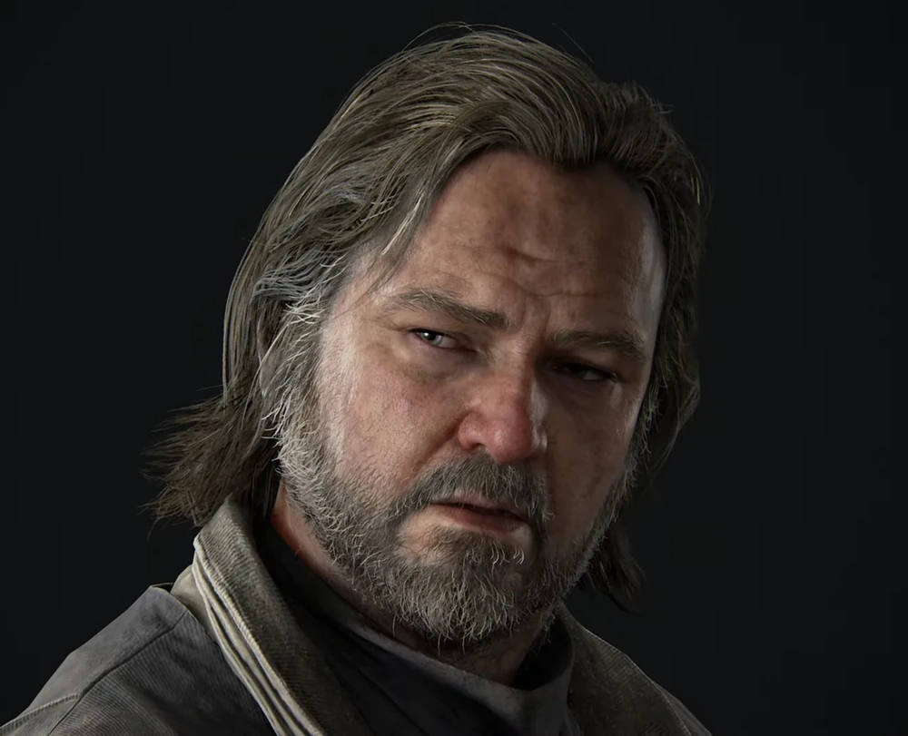
Bill es un superviviente solitario que vive en una ciudad llena de trampas, barricadas y sistemas improvisados para resistir contra infectados y humanos hostiles. Es un hombre paranoico, ingenioso y extremadamente preparado, que aprendió a sobrevivir completamente por su cuenta.
Su historia muestra una forma distinta de adaptarse al apocalipsis: no busca comunidad, ni reconstrucción, ni confianza. Solo quiere seguir vivo. Aun así, su vínculo con Joel ayuda a mostrar cómo el mundo ha cambiado y qué clase de personas logra producir.
Bill es uno de los personajes secundarios más memorables porque representa la soledad llevada al extremo.
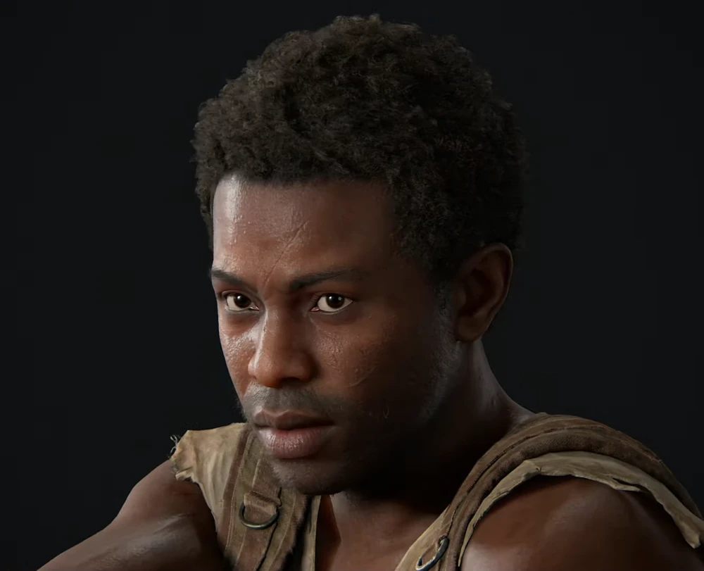
Henry Burrell es un sobreviviente que Joel y Ellie conocen en Pittsburgh. Viaja con su hermano menor Sam y trata de mantenerlo con vida en medio de un mundo dominado por cazadores y violencia.
Henry es un personaje importante porque refleja el peso de la responsabilidad familiar en el apocalipsis. Quiere proteger a Sam, pero el mundo y las decisiones desesperadas terminan llevándolo a una tragedia brutal.
Su historia funciona como un espejo de Joel, mostrando otra versión de un adulto que intenta cuidar a un menor en un mundo destruido.
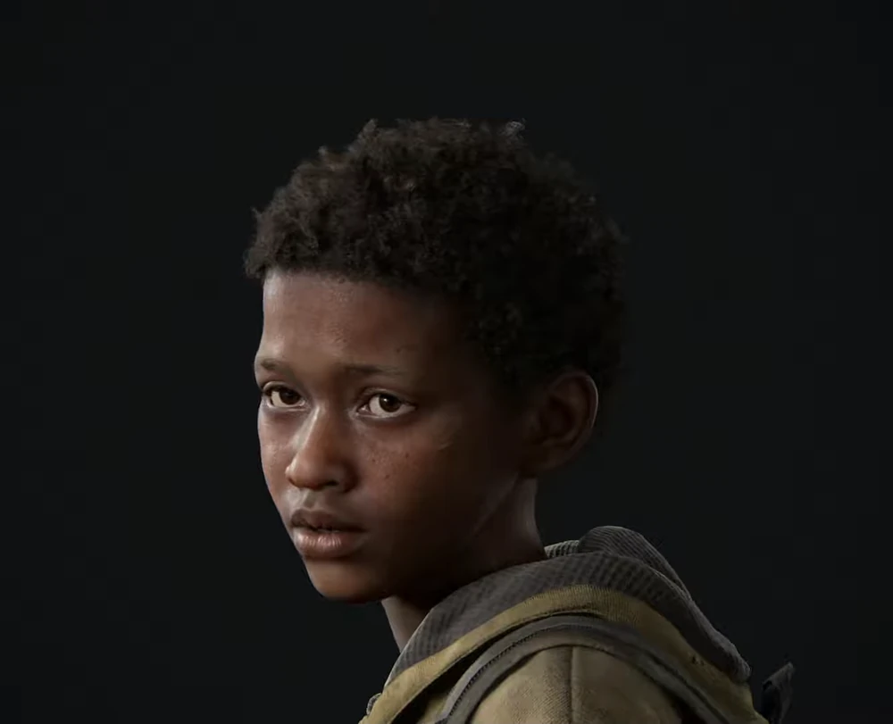
Sam es el hermano menor de Henry y uno de los personajes más trágicos del primer juego. Es un niño que crece en un mundo donde ya no hay espacio para la inocencia, y su relación con Ellie es una de las pocas partes más suaves y humanas del viaje.
A pesar de su edad, Sam vive con el miedo constante de perder a su hermano. Su destino termina siendo devastador y refuerza una de las ideas más duras de la saga: en este mundo, incluso los niños están condenados a sufrir las consecuencias del colapso.
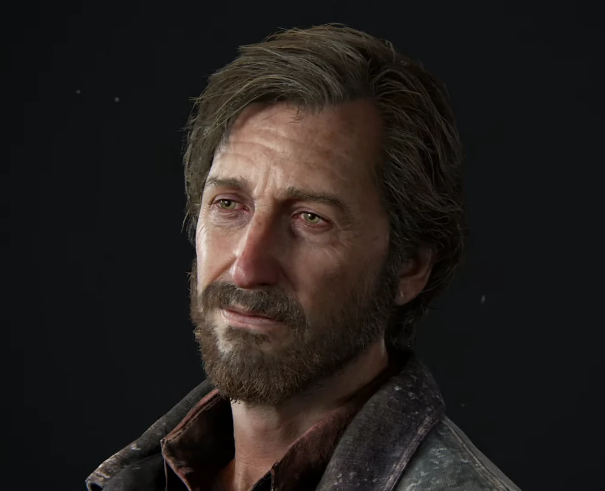
David es uno de los antagonistas más inquietantes del primer juego. A simple vista parece un líder civil capaz de negociar y mantener cierto orden, pero rápidamente se revela como un personaje manipulador, violento y profundamente peligroso.
Su encuentro con Ellie marca uno de los momentos más oscuros de toda la saga. David representa el horror humano más que el horror de los infectados, mostrando que la crueldad puede venir de personas aparentemente racionales.
Su historia lo convierte en un villano muy importante porque define el tipo de amenaza que Ellie debe enfrentar mientras aprende a sobrevivir sola.
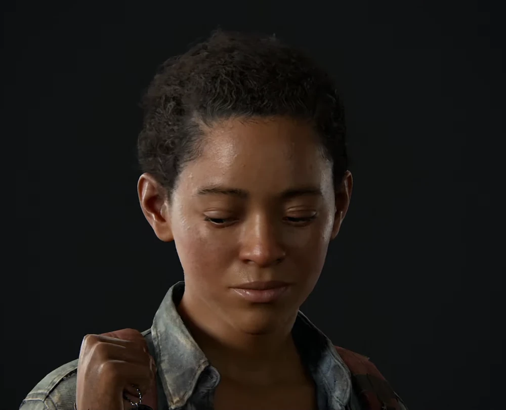
Riley Abel es la mejor amiga de Ellie en Left Behind y una figura clave para entender el pasado emocional de la protagonista. Ambas crecieron en un entorno militarizado y hostil, pero compartieron una relación muy cercana, llena de confianza, rebeldía y afecto.
Riley desaparece al unirse a las Luciérnagas, pero regresa para pasar una última noche con Ellie antes de irse definitivamente. Ese reencuentro es uno de los momentos más emotivos de toda la saga, porque muestra a Ellie en una etapa de inocencia que ya está a punto de romperse.
La historia de Riley es trágica porque representa el final de la infancia de Ellie y el inicio de una visión mucho más dura del mundo.
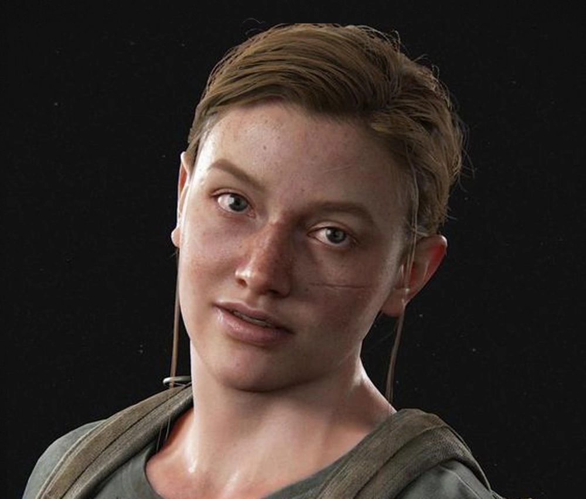
Abby Anderson es una de las figuras centrales de The Last of Us Part II. Su vida queda marcada por la muerte de su padre, Jerry, a manos de Joel al final del primer juego. Ese hecho define todo su camino posterior y la convierte en una mujer consumida por la venganza.
A lo largo de su historia, Abby se muestra como una sobreviviente fuerte, entrenada y muy capaz en combate, pero también como alguien que perdió parte de su humanidad en el proceso de buscar justicia. Su relación con Lev y Yara le da otra dimensión, mostrando que todavía puede cuidar a otros y tomar decisiones distintas.
Abby no es solo una antagonista; es una protagonista con una tragedia propia. Su historia está construida para mostrar el otro lado del mismo ciclo de violencia que destruyó a Joel y Ellie.
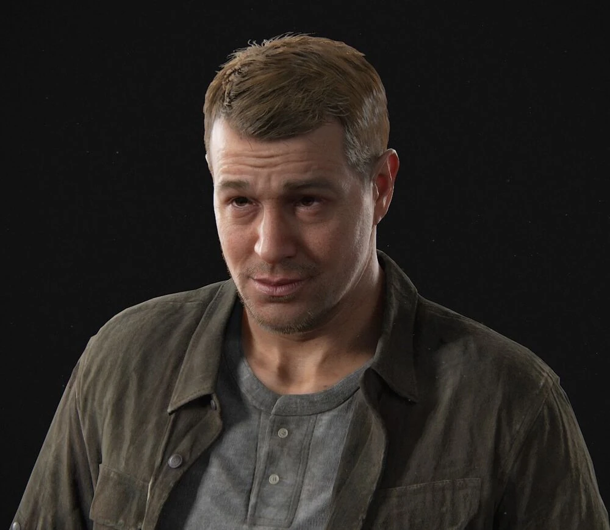
Jerry Anderson es el padre de Abby y un médico de las Luciérnagas. Es una figura muy importante porque fue el cirujano que iba a operar a Ellie al final del primer juego, lo que habría permitido intentar desarrollar una cura.
La decisión de Joel de matarlo desencadena toda la historia de The Last of Us Part II. Jerry representa el lado científico y moral del conflicto: alguien que creía estar haciendo lo correcto para salvar a la humanidad.
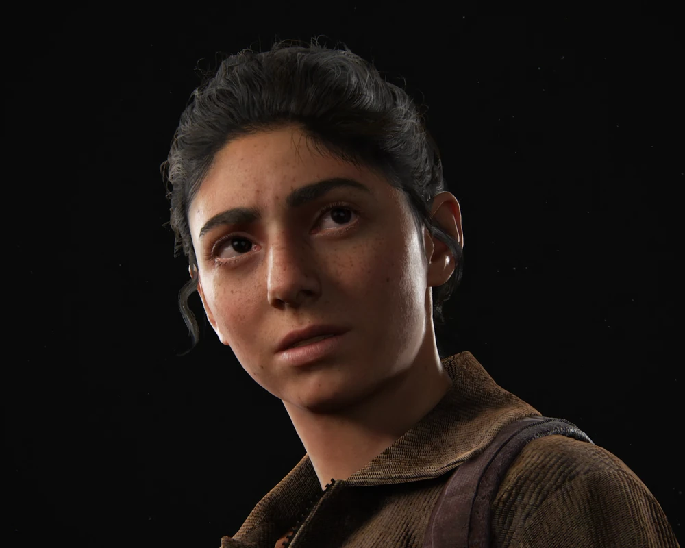
Dina es una de las personas más importantes en la vida de Ellie durante The Last of Us Part II. Es inteligente, cálida, valiente y sirve como un punto de apoyo emocional para Ellie en medio de la violencia.
Su relación con Ellie aporta un nivel más humano a la historia, mostrando que todavía existe la posibilidad de amar y construir algo en medio del desastre. Sin embargo, la obsesión de Ellie con la venganza pone esa relación en riesgo constante.
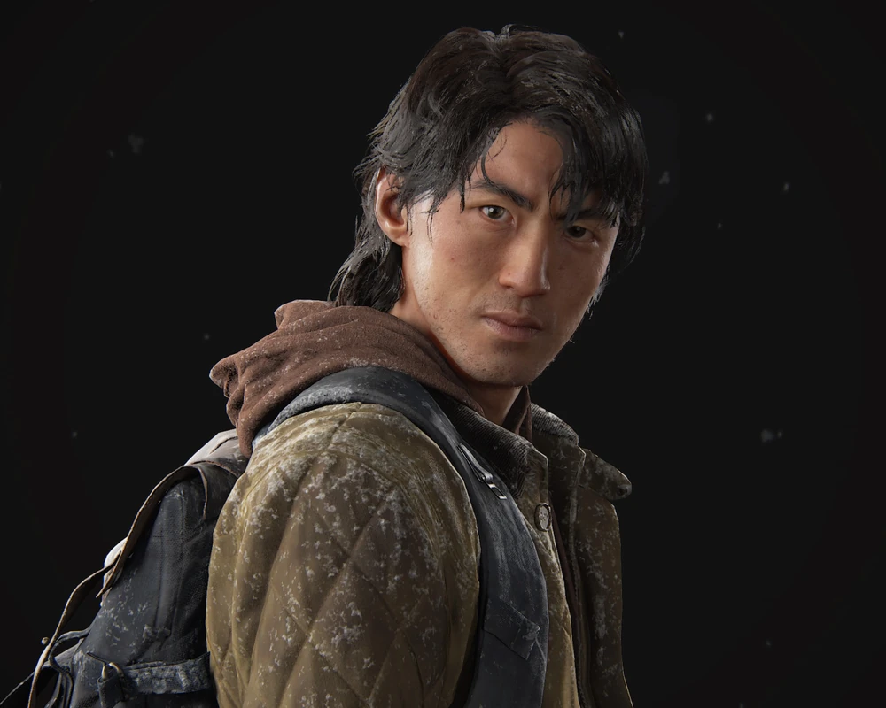
Jesse es uno de los aliados más importantes de Ellie y Dina en Jackson. Es un personaje responsable, maduro y muy comprometido con su comunidad. A diferencia de otros, intenta mantener el equilibrio entre el deber y las relaciones personales.
Su presencia refuerza la idea de que aún existe una vida organizada y humana fuera de la violencia directa, aunque esa vida también sea frágil.
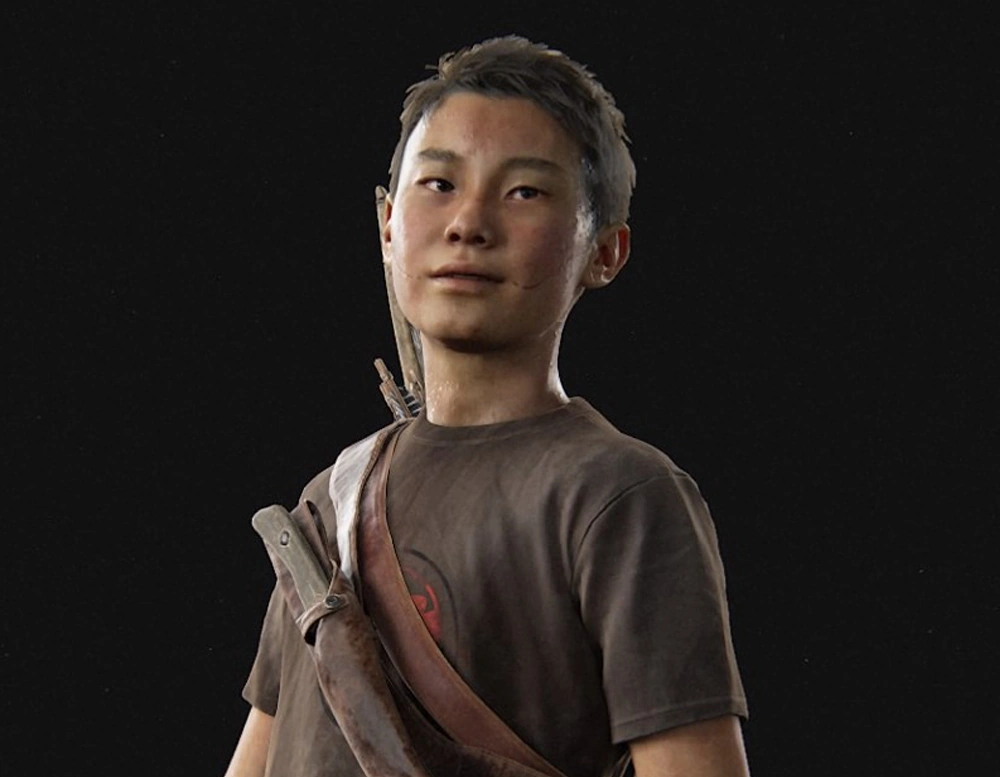
Lev es un personaje fundamental de The Last of Us Part II. Forma parte de los Serafitas al principio, pero su historia gira en torno a su identidad, su relación con su hermana Yara y la forma en que el fanatismo religioso intenta destruirlo.
Su vínculo con Abby transforma la historia de ambos personajes y ayuda a mostrar que todavía puede existir compasión incluso entre enemigos. Lev representa la fragilidad, la resistencia y la posibilidad de escapar del odio heredado.
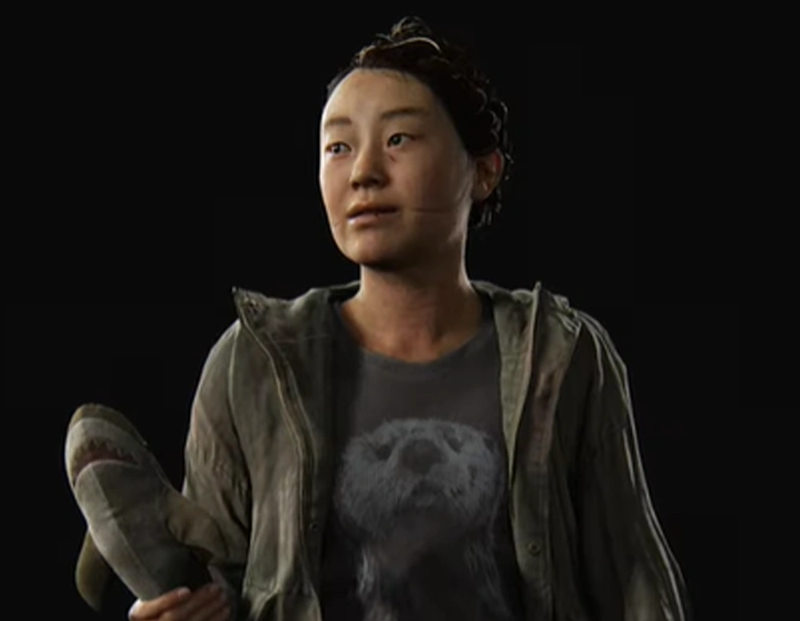
Yara es la hermana de Lev y una figura muy importante dentro de la trama de Abby. Su historia está marcada por la persecución de los Serafitas y por su intento de proteger a Lev de un entorno extremista.
Su papel es trágico y poderoso al mismo tiempo, porque refleja cómo el fanatismo puede destruir familias enteras.
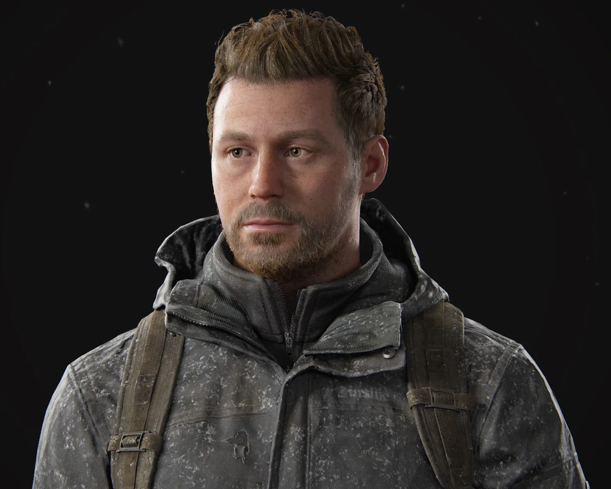
Owen Moore es uno de los miembros del grupo de Abby y una figura central en su historia. A diferencia de muchos otros, no desea seguir viviendo dentro de un ciclo de violencia interminable. Esa diferencia lo pone en conflicto con el mundo en el que vive.
Su relación con Abby es compleja y su destino tiene consecuencias enormes dentro de la trama de The Last of Us Part II.
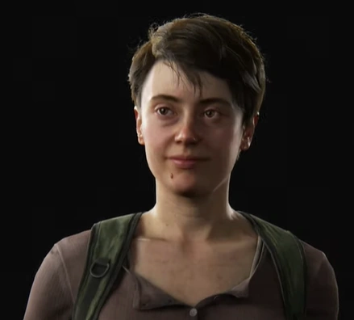
Mel es una médica y miembro del grupo de Abby. Su historia está marcada por el conflicto interno, la guerra y su posición dentro de un entorno donde los sentimientos personales y las decisiones morales chocan constantemente.
Su personaje aporta una dimensión más humana al grupo de las Luciérnagas y a los WLF, mostrando que no todos los conflictos se reducen a héroes y villanos.
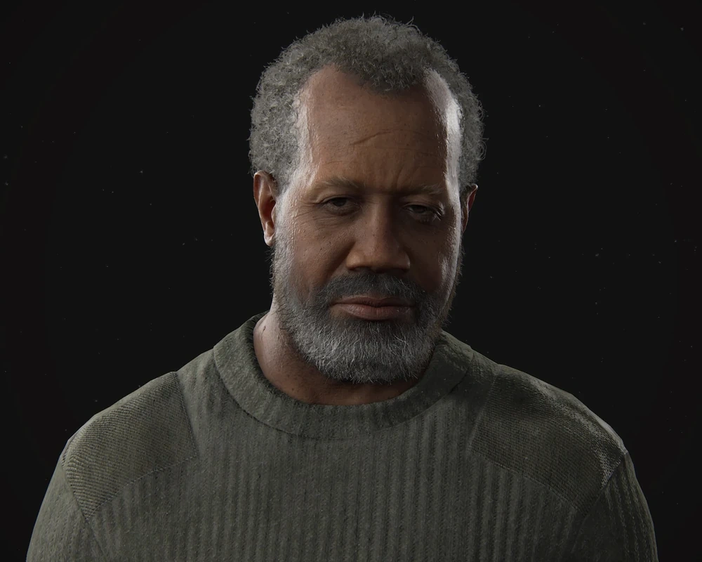
Isaac Dixon es el líder del WLF en Seattle. Su presencia representa la estructura militar y autoritaria que domina la ciudad durante The Last of Us Part II. Es un líder duro, estratégico y dispuesto a mantener el control por cualquier medio.
Su papel en la historia ayuda a mostrar que la guerra entre facciones sigue siendo una de las realidades más fuertes del mundo posapocalíptico.
Tess, Tommy y Bill son tres personajes esenciales del primer juego que ayudan a mostrar distintos caminos de supervivencia. Tess representa la dureza con sentido moral; Tommy representa la búsqueda de comunidad y reconstrucción; Bill representa el aislamiento extremo y la supervivencia paranoica.
Cada uno de ellos aporta una mirada distinta sobre cómo vivir en un mundo destruido.
El mundo de The Last of Us está lleno de amenazas constantes. Los enemigos no son solo los infectados por el Cordyceps, sino también otros humanos que han perdido su moralidad. Ambos representan diferentes tipos de peligro: la infección y la propia naturaleza humana.
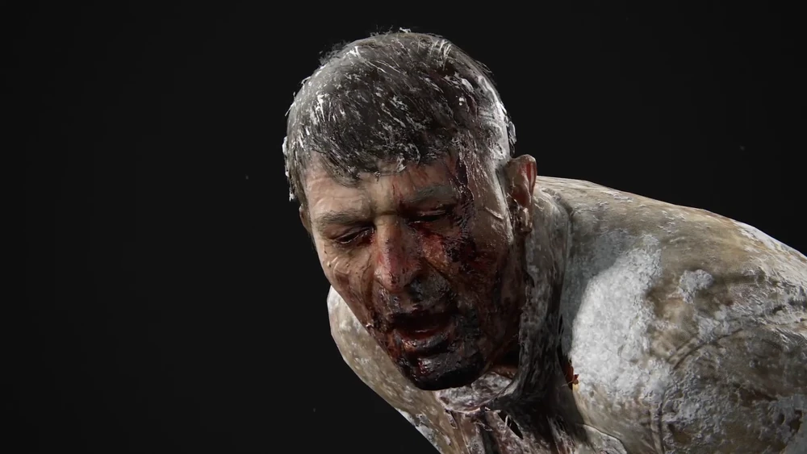
Los Runners son la primera fase de la infección. Son humanos recientemente infectados que todavía conservan parte de su apariencia original.
Son extremadamente rápidos, agresivos y atacan en grupo. Aunque no son los más resistentes, su velocidad los convierte en una amenaza constante, especialmente en espacios cerrados.
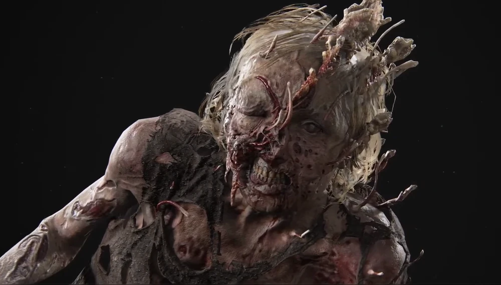
Los Stalkers representan una etapa intermedia de la infección. A diferencia de los Runners, son más inteligentes y utilizan el entorno para emboscar.
Se esconden, observan y atacan por sorpresa. Este comportamiento los hace extremadamente peligrosos, ya que obligan al jugador a estar constantemente atento.
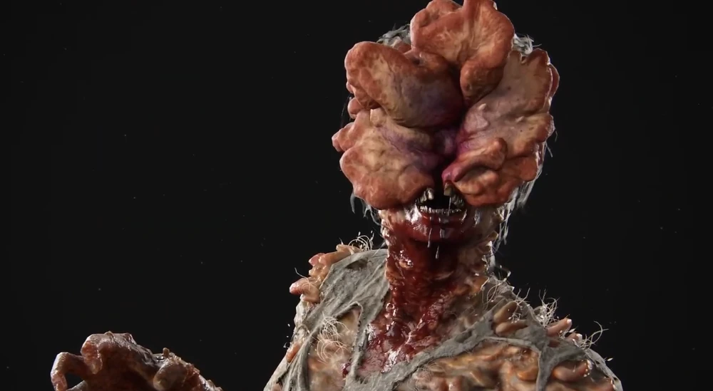
Los Clickers son una de las formas más icónicas de la infección. En esta fase, el hongo ha cubierto completamente la cabeza del huésped, dejándolo ciego.
Para moverse, utilizan ecolocalización mediante sonidos característicos. Son extremadamente letales: un solo ataque puede ser mortal.
Su diseño y comportamiento los convierten en uno de los enemigos más aterradores del juego.
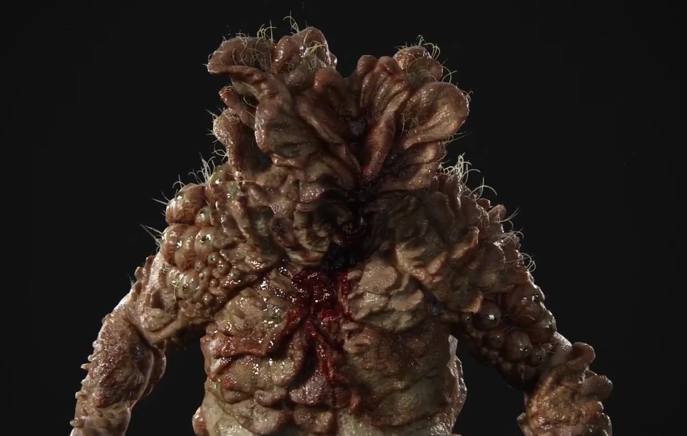
Los Bloaters son una fase avanzada de la infección. Su cuerpo está completamente cubierto por capas gruesas de hongo, lo que los hace extremadamente resistentes.
Son lentos pero devastadores. Pueden lanzar esporas tóxicas y soportar grandes cantidades de daño antes de caer.
Representan una de las mayores amenazas en combate directo.
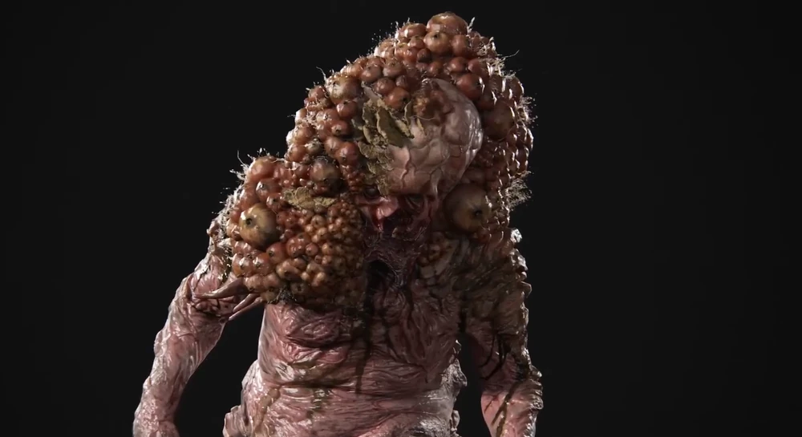
Introducidos en The Last of Us Part II, los Shamblers son una variante de los Bloaters adaptada a entornos húmedos.
Liberan una nube ácida al morir y también durante el combate, lo que los hace peligrosos incluso a distancia.
Obligan a cambiar completamente la forma de enfrentarlos.
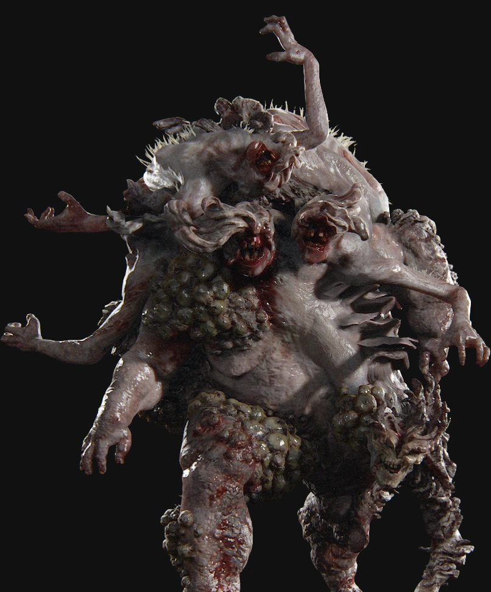
El Rat King es una de las criaturas más grotescas de toda la saga. Se trata de una masa formada por múltiples infectados fusionados tras años de evolución.
Aparece en un hospital abandonado y representa el extremo máximo de la infección. Es extremadamente fuerte, resistente y aterrador.
Simboliza lo peor que puede llegar a ser el Cordyceps.
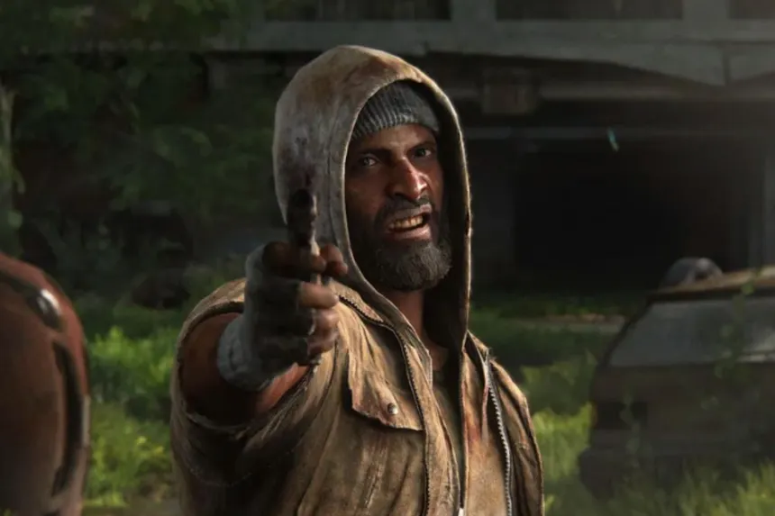
Los Hunters son grupos de humanos que atacan a otros sobrevivientes para robar recursos. Utilizan emboscadas y engaños para capturar a sus víctimas.
Son extremadamente peligrosos porque piensan, se organizan y actúan estratégicamente.
Representan la pérdida total de la moral en el mundo postapocalíptico.
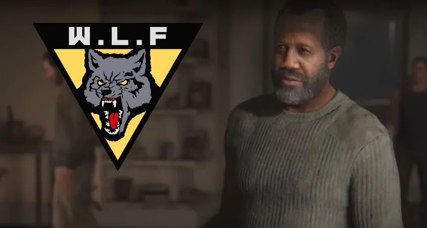
El WLF es una organización militarizada que controla gran parte de Seattle en The Last of Us Part II.
Son disciplinados, bien armados y trabajan en equipo. Utilizan tácticas militares y comunicación constante.
Son uno de los enemigos humanos más peligrosos del juego.
Los Serafitas son un grupo religioso extremista que vive aislado de la tecnología moderna.
Utilizan armas primitivas como arcos y cuchillos, pero compensan esto con sigilo, comunicación por silbidos y ataques coordinados.
Su fanatismo los convierte en enemigos impredecibles y muy peligrosos.
Los Rattlers son un grupo de esclavistas que aparecen en el tramo final de The Last of Us Part II.
Capturan a otros sobrevivientes y los utilizan como mano de obra forzada. También usan infectados como armas.
Representan una de las formas más crueles de organización humana en el mundo del juego.